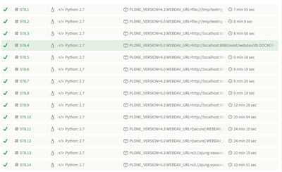

XML Director 1.3 released

I am pleased to announce the release of XML-Director Version 1.3.
Version 1.3 now supports much more storage backends like finally the local filesystem, Amazon S3, Alfresco, Owncloud and third-party storage integrations like StorageMadeEasy and Otixo. In addition a huge amount of effort went into testing XML-Director against various storages. Each single source commit is directly tested against more than a hundred unittests running agains 14 different software and storage combinations.

As a side project we started to create a new REST API for XML-Director which will make much easier to interact with XML-Director from third-party applications. The near future vision is being able to talk from Microsoft Word through a plugin directly to XML-Director. Saving a Word document over XML-Director will directly store the DOCX file within the XML-Director CMS and trigger arbitrary conversions (XML/HTML transformations in the first place). Support for Indesign & Oyxgen XML Editor are planned. Because of the generic design of XML-Director we will be able to support arbitrary XML dialects from Docbook to DITA.
Official and final support for Plone 5 has been pushed back until the release of Plone 5.1 due to serious issues with the Plone 5 resource registries.
Merry Christmas everyone!
May the angle brackets with you!